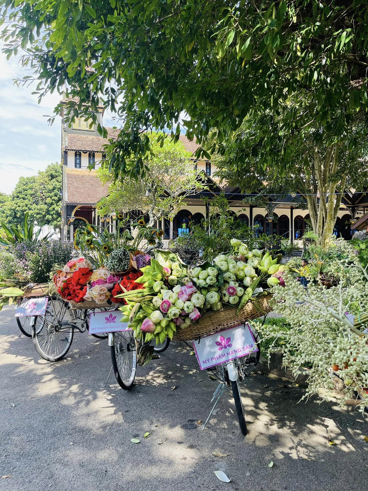
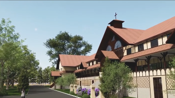

Tòa Giám Mục Kon Tum
Chủng viện thừa sai Kon Tum


Vẻ đẹp văn hóa hòa quyện
Tọa lạc tại:
- 146 Trần Hưng Đạo, phường Thắng Lợi, Thành phố Kon Tum.
- Số điện thoại liên hệ:090 920 10 75
- Giờ mở cửa: 7:30 – 11:00 và 14:00 – 17:00 (thứ 4 – Chủ nhật), thứ 3 đóng cửa.

Thơm Ngát Mùi Hoa Sứ
Tòa Giám mục là sự kết hợp hài hoà giữa lối kiến trúc phương Tây với lối kiến trúc dân tộc bản địa truyền thống. Các hiện vật, bản đồ trưng bày trong chủng viện đều rất giá trị, được chạm khắc bằng gỗ tỉ mỉ. Đây là nơi không thể bỏ qua khi du khách đến Kon Tum tìm hiểu lịch sử, văn hóa, đời sống người dân vùng đất mến khách này.